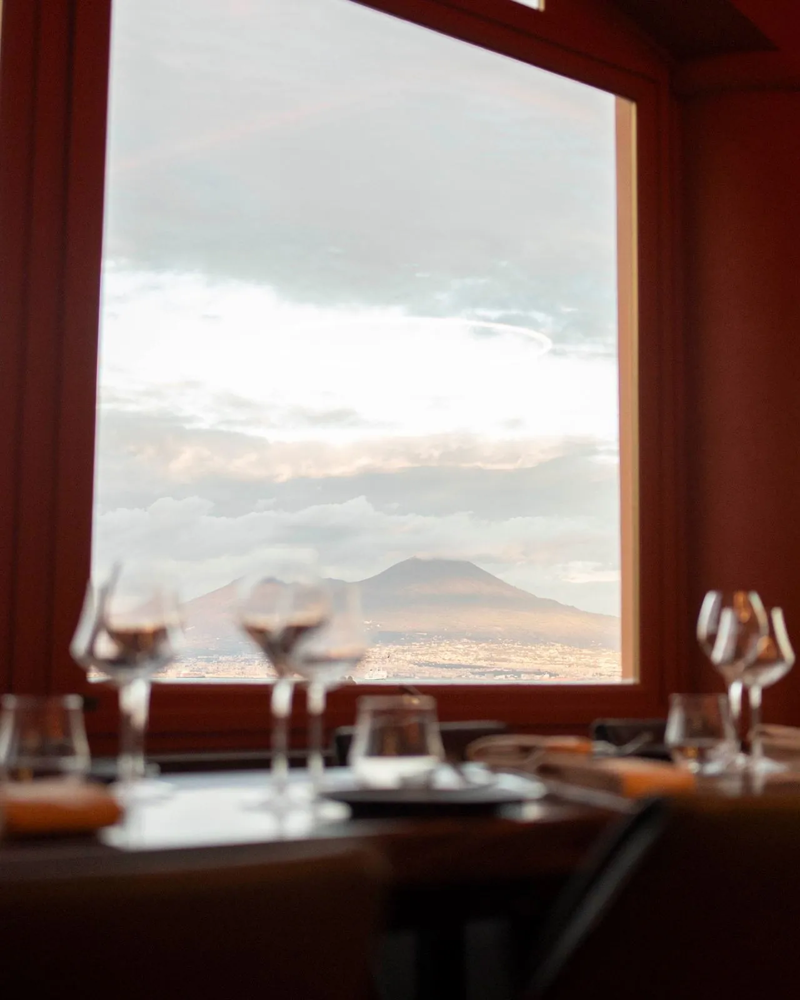
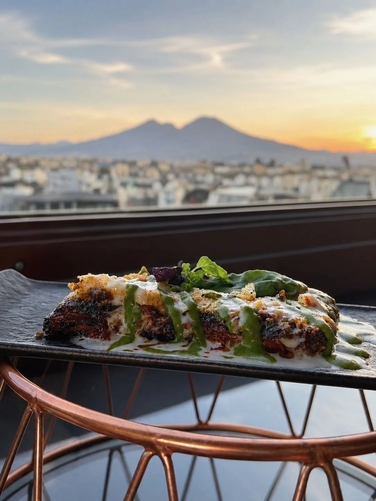
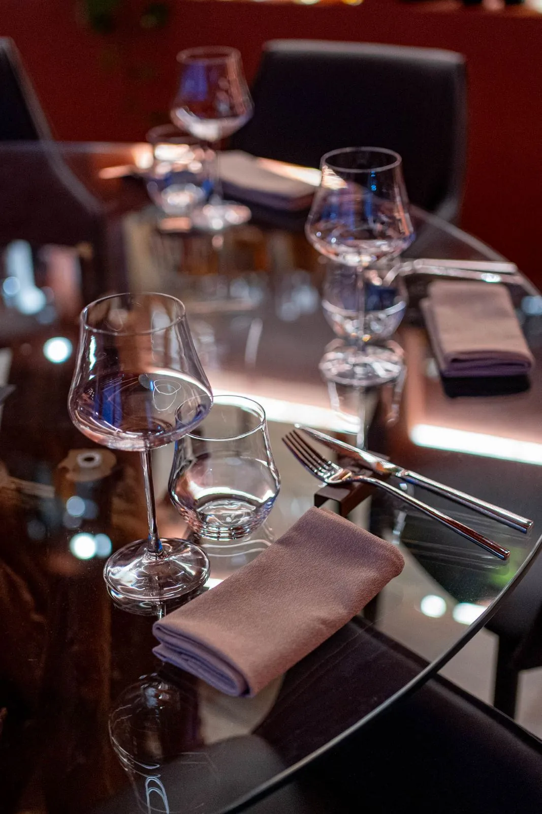
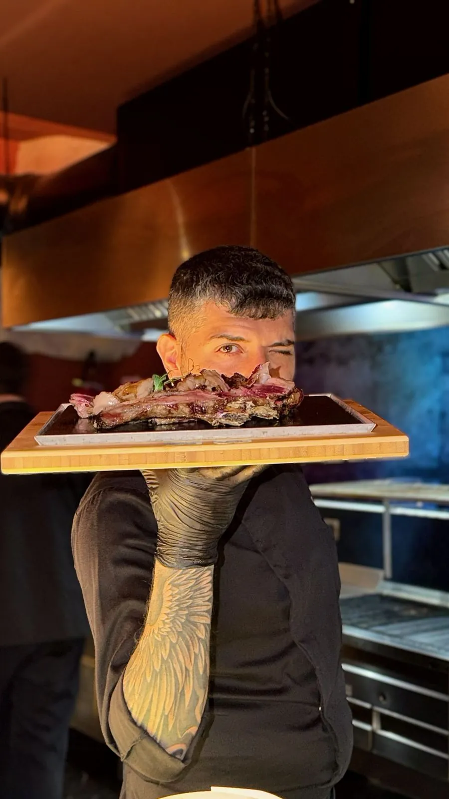

Quanti ospiti
La capienza dipende dalla formula: con la cena seduta arriviamo a 120 persone, in piedi fino a 180. Per gruppi più piccoli riserviamo una parte della sala.
Le occasioni
Cene aziendali e team building
Cene con clienti e colleghi, feste di fine anno e team building con sommelier, costruiti su percorsi enologici.
Compleanni e anniversari
Dal tavolo riservato alla sala intera, con torta e brindisi.
Battesimi e comunioni
Pranzi in famiglia con un menu dedicato anche ai più piccoli.
Feste di laurea e feste private
Lauree, rimpatriate, feste tra amici: la sala è vostra.
Degustazioni private
Su richiesta, degustazioni di vini e di carni e percorsi di avvicinamento alla degustazione, guidati da sommelier qualificati.
Presentazioni ed eventi
Lanci di prodotto, serate a tema, eventi aziendali con musica.
Perché da noi
Vista sul Golfo
Grandi vetrate sul mare, il Vesuvio e il porticciolo di Marechiaro.
Braceria di carni pregiate
Tagli da tutto il mondo, frollati nella nostra cella e cotti alla brace.
Menu su misura
Dalla cena di più portate al buffet: lo costruiamo con voi, anche per esigenze alimentari particolari.
Carta dei vini
Oltre 160 etichette, dalle bollicine ai grandi rossi, e abbinamenti consigliati.
Musica dal vivo
Su richiesta, artisti per accompagnare la serata.
Parcheggio riservato
Gratuito, a disposizione dei vostri ospiti.
Un esempio di menu
Il menu di una delle nostre serate. Per il vostro evento lo componiamo insieme, anche con i tagli della braceria.
La sala




Raccontateci il vostro evento
Vi ricontattiamo per proporvi menu e preventivo. Se preferite, scriveteci direttamente su WhatsApp.